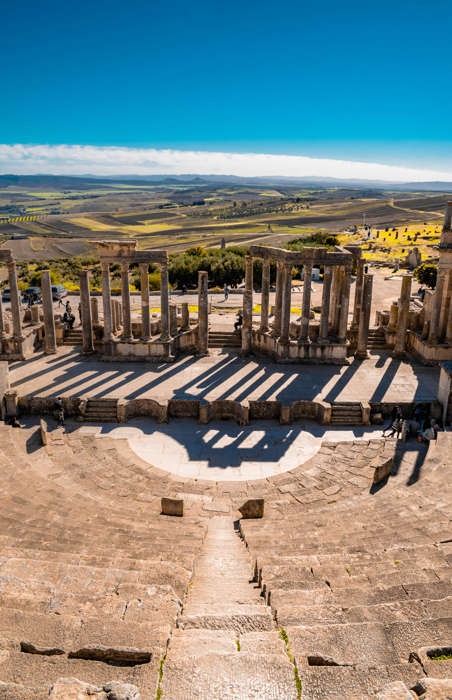
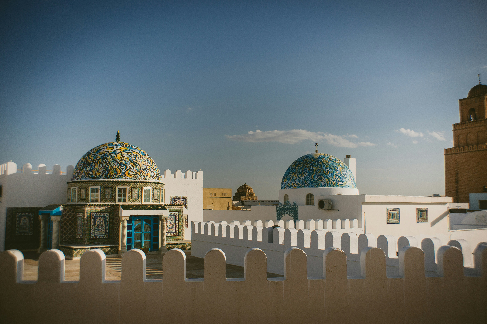
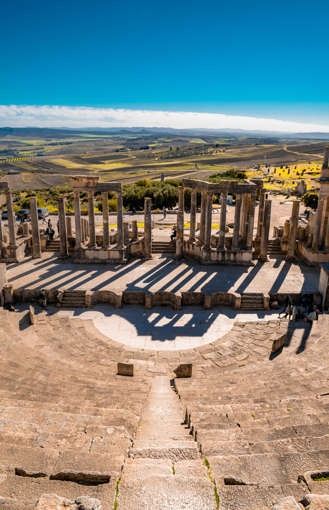
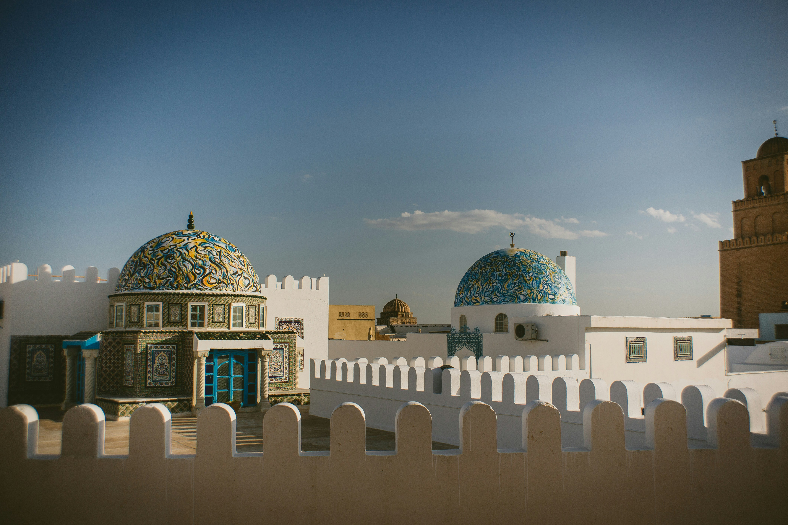
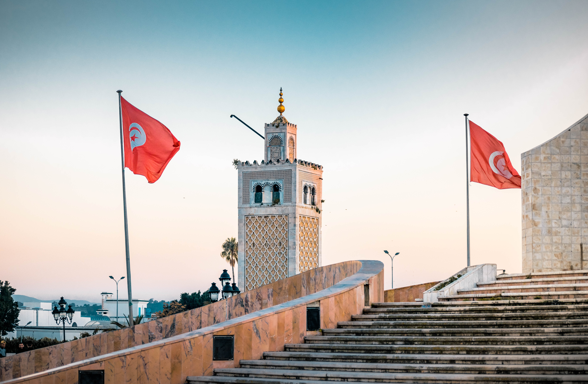
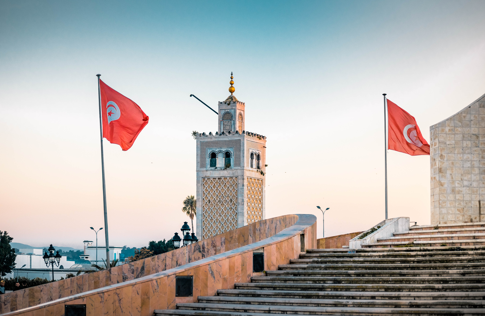

Universal Heritage
Over its history, Tunisia has balanced influences from Africa, the East, and the West. Seven sites and monuments are UNESCO World Heritage sites due to their cultural significance. From architecture to music and cuisine, Tunisia's diverse heritage reflects influences from Berber, Andalusian, Italian, Ottoman, and African traditions, creating a rich tapestry of cultural expression.
 



 
